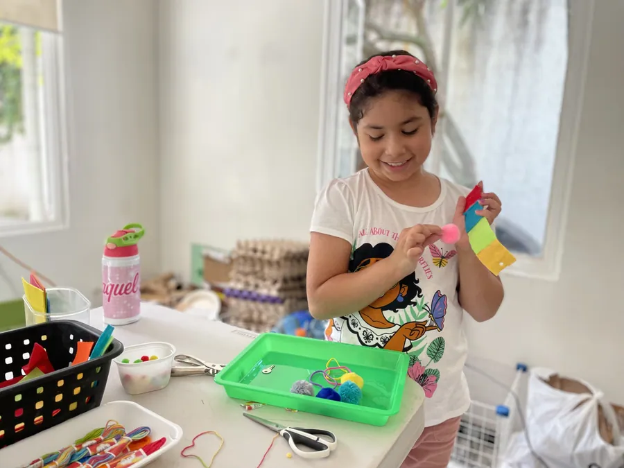
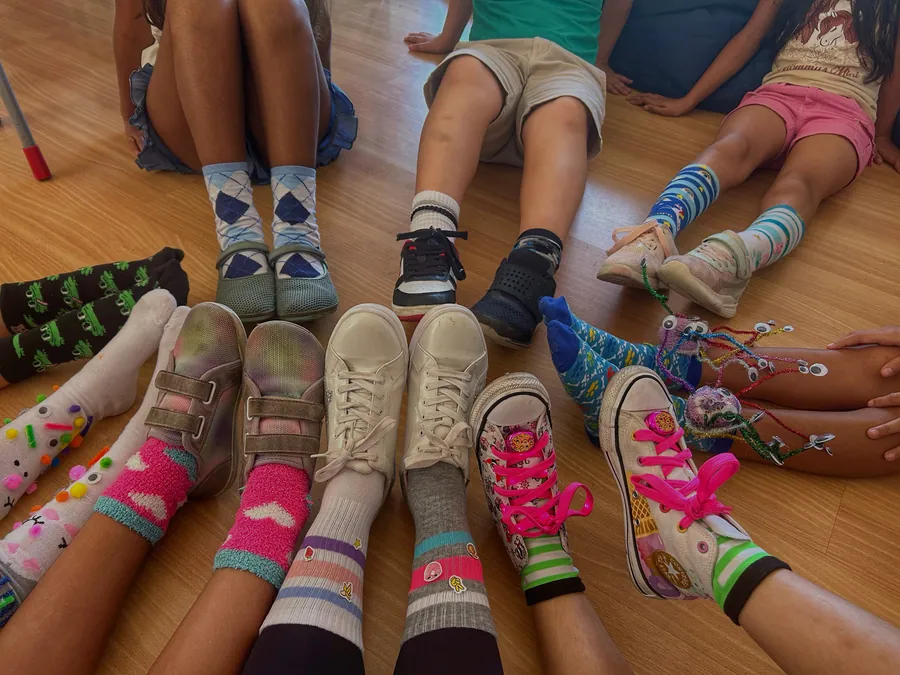
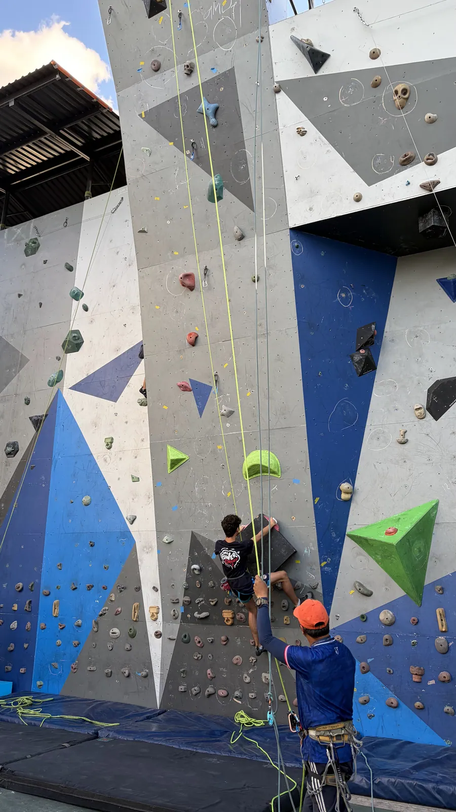
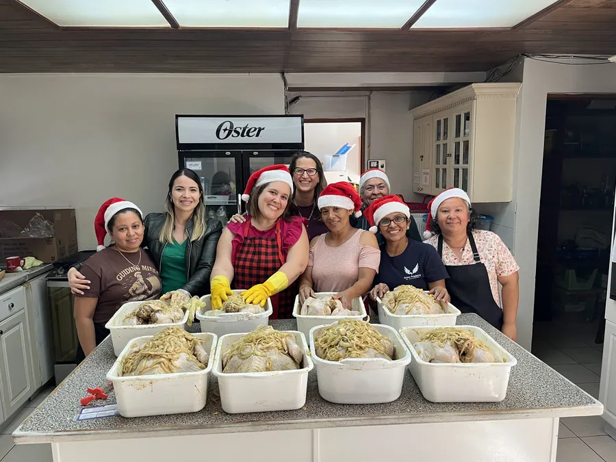

Questions and answers
Everything parents ask us, answered properly.
Short answers are easy and useless. Below are the real ones, including the uncomfortable questions about accreditation, cost and who we are not right for.

Is Acton right for our family?
How is Acton different from a traditional school?
At Acton, learners take ownership of their own education. They set goals every Monday, work toward real mastery rather than just a passing grade, and are accountable to themselves and to their studio.
Instead of spending the day listening to lectures, they solve meaningful problems, collaborate in mixed age studios, debate difficult questions in Socratic discussions, complete four to six week Quests, present their work publicly, and complete real apprenticeships in high school.
Traditional school often trains children to ask: “What am I supposed to do?” Acton trains them to ask: “What am I trying to accomplish, what do I need to learn, and what do I do next?”
That is the mindset of a builder, leader, entrepreneur, or highly valuable professional.
Who thrives at Acton Academy?
Children who are curious, independent, energetic, and ready for real responsibility. Children who like to build, create, solve problems, lead, experiment, sell, organize, debate, or work deeply on something that interests them.
They do not have to arrive highly disciplined or self directed. Those muscles are built here. But over time, learners do need to accept a basic bargain: more freedom comes with more responsibility.
If you want autonomy, you have to use it well. If you make a mistake, you repair it. If you fail, you learn from it. If you want to be part of the community, you have to contribute to it.
Acton can be an excellent fit for gifted learners because there is no speed limit, and for some learners with ADHD, dyslexia, or uneven academic skills because they can work at their own pace. But Acton is not a special needs school and requires a high level of independence.
Acton works best for families who want their children to become capable adults, not simply successful students.
If you are not sure whether your child would thrive here, schedule a call with us. We can talk specifically about your child's personality, strengths, challenges, learning style, and what they need from a school.
Who is Acton not the right school for?
Acton is not a good fit for every family.
If you want a teacher directing every hour, assigning the same work to every child, managing motivation closely, and stepping into every conflict, you will probably be happier somewhere else.
We are also a poor fit for families who want exceptions every time their child is uncomfortable or faces a consequence.
At Acton, children forget things. They miss goals. They disagree. They sometimes fail. We do not treat those moments as emergencies. Those moments are part of the education.
We are trying to develop young people who can function without someone standing over them telling them exactly what to do. That requires practice.
What role do parents play at Acton?
A big one. But your job is not to become your child's second teacher.
Your job is to help your child become the person who can manage their own work, solve problems, keep commitments, and recover from mistakes. That sometimes means asking questions instead of fixing the problem.
You may hear: “I forgot.” “I didn't finish.” “Someone was unfair.” “I don't want to.”
Those statements do not automatically require adult intervention. Sometimes the child needs to think, decide, repair, plan, or act. That is exactly the muscle we are trying to build.
What happens when a learner struggles, fails, or refuses to do the work?
First, we figure out what is actually happening. Is the work too difficult? Too easy? Is the learner confused? Distracted? Avoiding discomfort? Testing a boundary?
Then we respond. A Guide may ask questions, help break down a goal, point the learner toward a resource, or use the systems and consequences already built into the studio.
But we generally will not chase a learner around all day trying to make them care. Eventually, every young person has to learn that choices produce results.
At Acton, failure is not shameful. It is information. What happened? What did you learn? What will you do differently next time?
How does discipline work at Acton?
There are rules. There are consequences. There is also less adult policing.
Learners help create their studio agreements and are expected to uphold them. If someone repeatedly interrupts others, damages trust, refuses responsibilities, or breaks community agreements, there are consequences.
If behavior becomes serious enough that one learner is preventing everyone else from learning safely and productively, adults intervene.
The important distinction is: learner driven does not mean child controlled. It means young people are given meaningful responsibility and expected to grow into it.
Freedom without responsibility is chaos. Freedom with responsibility is preparation for adulthood.
Is Acton only for gifted learners or children with altas capacidades?
No.
Acton works unusually well for many advanced learners because there is no speed limit. A learner who masters a subject quickly does not have to wait for everyone else.
But Acton is not a gifted program. A child may be two years ahead in math and need extra time in writing. Another may be academically average but unusually creative, entrepreneurial, mechanically talented, or strong in leadership.
Traditional schools often define ability very narrowly. We do not.
What matters more is whether a learner can grow toward independence, accept feedback, solve problems, and contribute productively to the studio.
Can Acton support children with learning differences?
We do not offer specialized special education services. Acton is a highly independent, learner driven environment, and we are not equipped to provide the level of individual support that some children need.
Some learners with ADHD, dyslexia, giftedness, or uneven academic skills can do very well here because they are able to work at their own pace.
But the question is always the individual child. Before admission, we look carefully at whether the learner can function successfully and independently in our environment.
If we believe a more specialized school would serve a child better, we will say so. We would rather lose an enrollment than accept a child into a school where they are unlikely to thrive.
Are you trying to turn every child into an entrepreneur?
No. We are trying to develop the qualities entrepreneurs need.
Not every learner will start a company. Some will become engineers, doctors, artists, researchers, executives, designers, teachers, or choose paths that do not exist yet.
But almost every meaningful adult path rewards the same qualities: initiative, judgment, problem solving, communication, adaptability, and the ability to create value.
Traditional education often trains children to ask: “What do I need to do to get the grade?” We want them increasingly asking: “What needs to be done, and how can I make it happen?”
That mindset matters whether you own the company or work inside one.
Montessori
What is Montessori?
Montessori education was developed more than a century ago by Dr. Maria Montessori, one of Italy's first female physicians. She did not begin with a theory about how children should learn. She began by carefully observing how children actually develop.
From that work, she created a complete educational method built around hands on materials, independence, movement, concentration, order, and deep respect for the child.
Montessori materials help children understand complex ideas concretely before moving to abstraction. In math, language, science, geography, and other areas, children manipulate, explore, repeat, and discover concepts instead of simply memorizing them.
Montessori also places great emphasis on Practical Life. Children prepare food, pour water, clean, organize, dress themselves, care for materials, and contribute to the classroom. The message is simple: you are capable.
There is also a strong focus on Grace and Courtesy: how to greet someone, wait your turn, speak respectfully, care for shared spaces, and live well with other people.
All of this happens in a carefully prepared environment, guided by adults who observe closely, respect children deeply, and introduce the right challenge at the right moment.
The result is an education designed to develop strong intellect without sacrificing curiosity, creativity, independence, or individuality. Montessori alumni include innovators such as Google founders Larry Page and Sergey Brin, Amazon founder Jeff Bezos, Wikipedia founder Jimmy Wales, and many others.
For young children, we believe it is one of the strongest foundations possible.
Why did we choose Montessori as the foundation for Acton?
Because Acton was built to continue many of Montessori's core principles into the school age years.
The original founders of Acton were looking for a model that would preserve what Montessori does so well: hands on learning, practical responsibility, grace and courtesy, a prepared environment, self paced academics, and children taking ownership of their work.
Acton carries those principles forward and adds tools that become especially powerful as children grow: Socratic dialogue, modern technology, entrepreneurship, collaborative projects, and real world challenges.
That is why children with a Montessori background often hit the ground running at Acton. They already know how to choose purposeful work, manage themselves, care for a community, and learn without waiting for an adult to direct every step. They do not have to unlearn passivity.
Does Montessori mean children can do whatever they want?
No. Montessori gives children freedom within clear limits.
A child may choose meaningful work, move around the classroom, repeat an activity, work independently, and follow their interests. But that freedom depends on using it responsibly.
Children may not disrupt other learners, misuse materials, damage the environment, or prevent the community from functioning. If a child cannot yet handle a certain freedom well, that freedom becomes more limited until they are ready for it again.
So Montessori is not permissive. It teaches children to develop self control, respect for others, and responsibility for their choices.
The goal is not “do whatever you want.” The goal is “learn to use freedom well.”
What does a Montessori classroom actually look like?
A Montessori classroom usually looks calm, orderly, and purposeful. You will not see all the children doing the same thing at the same time.
One child may be working with math materials, another practicing language, another preparing food, and another receiving a lesson from a Guide.
A few things stand out immediately. Materials are displayed neatly at the child's level. Furniture and tools are sized for children. The room is orderly and visually calm. You will often see natural materials and live plants. The Guide is not the center of the room. Children are working on different things at the same time. The atmosphere is active but focused.
A strong Montessori classroom often feels like a beehive: quiet movement, concentration, purposeful work. The environment itself teaches independence, order, concentration, and respect.
Academics, graduation and university
Do Acton graduates get into university?
Yes.
Acton Academy El Salvador graduated its first learner in June 2026. He began with us at age eight, completed apprenticeships with an orthopaedist, neurologist, neonatologist, and dermatologist, and is now studying medicine at Universidad Dr. José Matías Delgado in El Salvador. And he is the first of many.
Across the global Acton network, graduates have gone on to universities, entrepreneurship, creative careers, apprenticeships, and professional work. Acton graduates have been accepted to universities including Vanderbilt, Georgia Tech, UT Austin, Rice, the University of Chicago, Notre Dame, Cornell, the Ross School of Business at the University of Michigan, and others.
Some have turned internships into jobs. Others have built companies, developed patents, or created careers in media and technology.
Our goal is not to push every learner toward one definition of success. University is absolutely available to Acton learners. It is simply not the only successful outcome.
Do you give grades, report cards, and transcripts?
Yes. We provide grades, report cards, official transcripts, and graduation records.
The difference is that at Acton, we care less about simply finishing a school year and more about whether the learner has actually mastered the material.
In a traditional system, a student may pass math with a 7 or 8 out of 10 and move forward while still missing 20 to 30 percent of the concepts. Over time, those gaps accumulate.
At Acton, learners do not move forward in the core skills of reading, writing, and math until they have demonstrated mastery.
Beginning in third grade, learners also take an internationally recognized standardized assessment each year so we can measure progress against an outside benchmark. By middle school, many of our learners are already reaching the upper limits of that test.
So yes, families receive the traditional documentation they need. But behind those grades is something more important: evidence that the learner can actually do the work.
Can my child graduate early?
Yes. Across the Acton Global Network, many learners have completed their basic high school academics before age 18.
At Acton, there is no speed limit. A learner can move as quickly as they are able to master the material.
Once the core academic requirements are complete, they can use that time to build a more customized path around what they want to do next. That may mean an internship, starting university early, launching a business, or advanced work in a field they care about.
Graduating early is not the goal. But if a learner is ready to move faster, we do not make them wait just because of their age.
Who teaches my child, and what qualifications do your Guides have?
Our school was founded by Shannon Falkenstein and Carmen Castro Dardano, both with deep experience in education.
Shannon studied at Emory University, earned a master's degree in education from NYU, and is a certified Montessori Guide. Carmen holds a degree in Early Childhood Education, is a certified Montessori Guide, and is a certified Montessori Administrator.
Every Montessori Guide at our school is a certified Montessori Guide with formal Montessori training and classroom experience.
In Acton, our Guides have university degrees in education or related fields, years of experience working with young people, and training through the Acton network as Socratic Guides.
Our team is trained specifically for the kind of education we provide: Montessori, Socratic dialogue, learner driven education, and coaching young people toward independence.
Accreditation
Is Acton Academy El Salvador accredited, and is it recognized by MINED?
Acton Academy El Salvador is accredited in the United States through the International Association of Learner Driven Schools (IALDS).
We are not currently accredited by the Ministerio de Educación de El Salvador (MINED).
We provide official grades, transcripts, diplomas, letters of conduct, and other school records.
Families who need apostilled documents or official homologación through MINED will need to use an additional service to complete that process. We have experience with and recommend West River Academy for this service.
Upon graduation, families may also request a US issued, apostilled diploma and academic record through an Acton affiliate school in Georgia, USA. We provide the documentation needed to support either process.
Our community
How many learners attend Acton Academy El Salvador?
We currently serve approximately 70 learners, from early childhood through high school.
We are a small, close knit community where each child is deeply known by the adults and by their peers. Learners of different ages interact often, older learners help younger ones, and each child plays a real role in the life of the school.
The result feels less like a large institution and more like a community where every learner matters. Because our studios are small and highly personalized, children are not simply one student among hundreds. Their strengths, challenges, interests, goals, and growth are noticed.
At the same time, they are part of something much larger: the global Acton network. So they get both, a deeply personal local community and access to a global network of opportunities.
Is Acton Academy mainly for American expatriates?
No. About 95 percent of our families are Salvadoran.
We also serve international families, including a small number of embassy families, but Acton Academy El Salvador is mainly a Salvadoran school.
Our program is fully bilingual, and learners graduate with a high level of English in reading, writing, speaking, and listening. That means they leave with the language skills to study, work, and pursue opportunities anywhere in the world.
How do you prevent bullying?
We are extremely careful about who joins our community. Every applicant age six and older spends a full Trial Week with us.
At the end of the week, our learners vote on whether to invite the child into the studio based on four qualities we expect from every Acton learner: intentionality, civility, energy, and excellence. The vote must be unanimous.
If the answer is almost yes, learners may give specific feedback and invite the child back for another Trial Week.
Once enrolled, every family agrees to our Honor Code. We expect learners to treat others with respect, contribute positively to the community, and protect the learning environment.
When a learner shows a repeated pattern of breaking that agreement, we act. We have asked learners to leave our school when their behavior was no longer compatible with the community.
The result is a school with high standards for who enters and high standards for who stays.

What is your approach to religion?
We believe in religious freedom. Families of any faith are welcome at Acton Academy El Salvador, and one of our promises is that learners will learn to respect both religious and political differences.
Our team includes people from different faith traditions and believes in God, but we do not teach or promote one religion.
Religion appears in our curriculum where it naturally belongs: history, literature, philosophy, culture, and discussions about important human questions.
You may hear us say “God bless you and your family” at school events. But choosing a faith for your child is your family's responsibility, not ours.
Daily life
What does a typical day look like?
Children arrive and have free play until 8:30. At 8:30, the studio circles up for a Socratic launch, where a Guide poses a difficult question and learners have to think, argue, and defend a position.
The morning is Core Skills: several hours of deep, self directed work on the goals each learner set on Monday. Then comes lunch, served family style on real plates.
The afternoon is the Quest: a four to six week sprint of escalating challenges that ends in a public exhibition. Art, physical education, history, and music also run through the week.
Before learners leave, they clean the studio: their desks, the floors, the bathrooms, and the trash.
The day is designed around deep work, real responsibility, and meaningful challenge.
What curriculum does Acton use?
Our curriculum combines authentic Montessori foundations with a full US academic program.
Preschool, from 14 months to age six, uses authentic Montessori curriculum and materials led by certified Montessori Guides. Kindergarten through second grade continues with Montessori foundations in reading, writing, and math.
From there, learners continue in a mastery based, learner driven Acton model using carefully selected academic tools, Socratic discussions, Quests, writing, projects, entrepreneurship, and real world challenges.
The goal is not simply to cover a curriculum. It is to help learners master the core academics and also learn how to teach themselves, solve unfamiliar problems, and create value.
What about sports?
We do not have a gymnasium or a football pitch on site. We do have teams.
Our rock climbing team trains at Move and competes against other schools. Our football team trains at Gambeta and competes in the Liga Bilingüe.
Training happens at nearby facilities rather than inside our campus.
If having large sports facilities on campus is very important to your family, we may not be the right school.

What is the Healthy Food Program?
The Healthy Food Program is part of the school experience. It is already inside the monthly cost you see on this site, so lunch is never billed separately.
We serve real homemade food, comida casera, every day, family style, on real plates, with real glasses and silverware. We avoid processed food, added sugar, and disposable packaging as much as possible.
The program is required for all learners unless there is a documented medical reason to opt out.
There is also an educational reason behind it. Children help set tables, serve food, clean up, and experience natural consequences. If a ceramic plate drops, it breaks. No lecture is necessary.
That is part of Montessori's idea of control of error: the environment itself teaches.

Is there a uniform?
No. Learners wear what they prefer.
We do ask families to purchase one Acton T shirt for excursions so we can identify the group easily.
From Spark Studio, kindergarten through second grade, and above, learners also have a personalized apron for art, science projects, cooking, and other hands on work.
The global Acton network
How many Acton Academies are there in the world?
The Acton Academy network has more than 300 schools in more than 20 countries and continues to grow.
That means our learners are part of a global community of schools using the same core philosophy: learner driven education, real responsibility, Socratic dialogue, entrepreneurship, and mastery.
What does being part of the global Acton network mean for my child?
It means Acton Academy El Salvador is not an isolated alternative school. Our learners are connected to a global network of schools, families, mentors, entrepreneurs, internships, exchanges, summits, and opportunities.
Acton graduates have gone on to selective universities, launched companies, developed patents, entered creative industries, and turned apprenticeships into real jobs.
Our own learners have studied at other Actons, hosted international learners here in El Salvador, and participated in global Acton events. In 2026, we hosted an international adolescent summit with learners from Acton communities in Honduras, Guatemala, Peru, Kuala Lumpur, Texas, and other locations.
The network gives our learners something unusual: a small, highly personal school at home, with access to a much larger world.
Where does the name Acton come from?
Acton Academy is named after Lord Acton, the historian and thinker best known for his work on freedom, character, and responsibility.
He believed that real liberty depends on self discipline and moral responsibility. That idea is at the center of Acton.
We give learners real freedom. And we expect them to learn how to use it well.
Cost
How much does Acton Academy El Salvador cost per month?
There are two numbers, and we publish both. The annual enrollment fee is paid once per year: $495 for Acton Academy K-12, $385 for Montessori Preschool. The monthly cost is then $638 for K-12, and it covers tuition of $440, the healthy food program at $118, and materials, books and subscriptions at $80. Montessori Preschool is $347 a month half day and $522 a month full day, on the same all in basis.
That monthly figure is paid in 11 payments per year, from August to June, not spread across 12. If you prefer to think in terms of a full year, the enrollment fee and the 11 payments together average $626 a month for K-12, $350 half day and $510 full day for preschool.
There is also a one time, non refundable registration fee of $1,800 for children five and older. Salvadoran citizens and permanent residents pay it at the start of their second year with us. Temporary residents pay it at first enrollment.
There are no uniform fees, no book lists, no technology fee, no library fee and no school supply list on top of that. Optional excursions are the only extra, and they are small.
Why do you publish your price when other schools do not?
Because you are going to find out eventually, and we would rather you find out now.
Most bilingual schools in El Salvador quote a tuition figure and then bill separately for food, books, materials, uniforms, technology, the library and the annual fee. The number that convinced you is not the number you pay.
We would rather lose a family at the price than win one who feels misled in November.
What payment methods do you accept, and do you accept Bitcoin?
Bank transfer, credit card through a payment link with a 4.8 percent surcharge, and Bitcoin. We do not accept cash.
Payments are due on the 2nd of each month. A $15 late fee applies after that, plus $1 per day.
Pay the full year in one payment before 2 August for a 4 percent discount, or in two payments, before 2 August and 2 December, for 2 percent.
Logistics
What is the school year, and when can we apply?
Our academic year runs from mid August through mid June.
We accept applications year round when space is available.
Families interested in joining begin by scheduling a call with us.